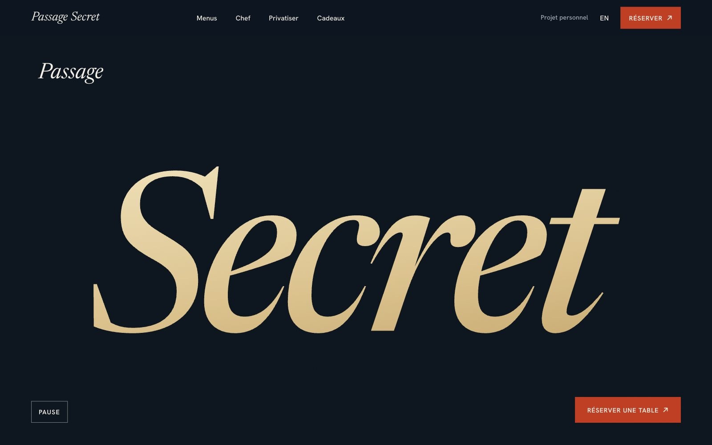
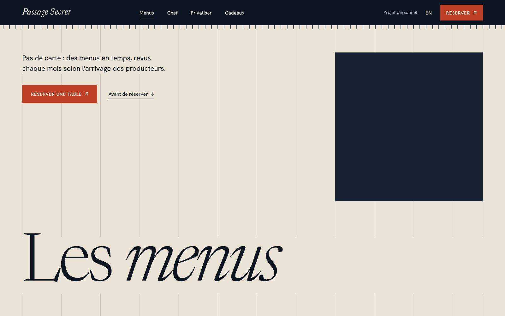
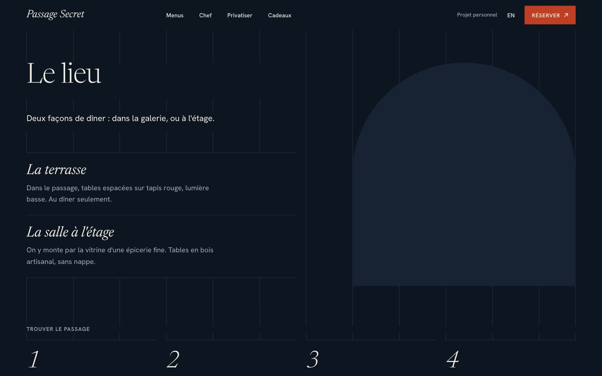
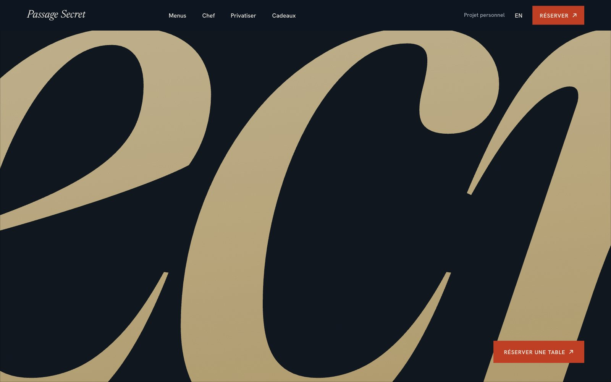
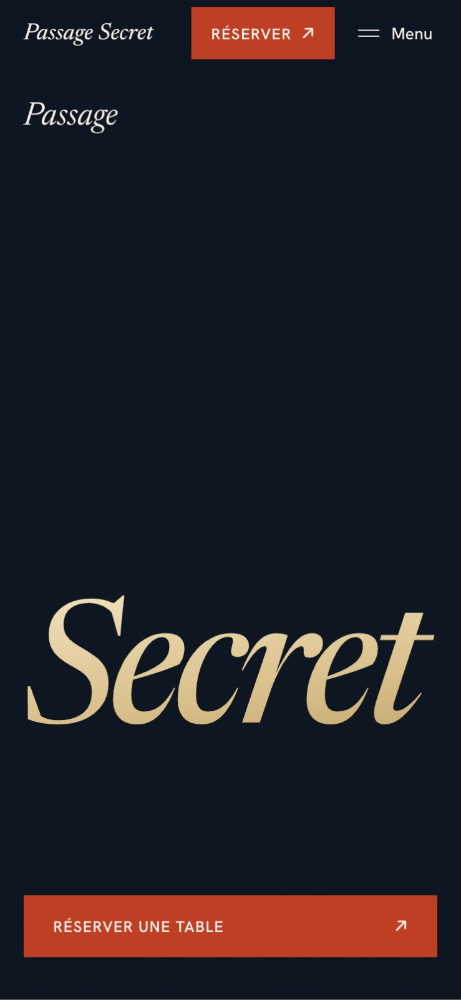

Passage Secret
Refonte du site d'un restaurant gastronomique de Bordeaux, 2026. Projet personnel, mené seul. Mon rôle : arborescence, parcours de réservation, direction artistique, intégration, version française et anglaise. HTML, CSS, JavaScript.
Projet personnel, non commandé, sans lien avec le restaurant, jamais mis en ligne.
Le projet
Le point de départ. Passage Secret est une table gastronomique bordelaise installée dans le Passage Sarget, à l'entrée discrète. Je cherchais un site à refaire, et celui-ci m'a laissé de la place pour travailler : personne ne me l'a demandé, je n'ai eu aucun échange avec le restaurant. Le site d'origine a de la matière : menus et prix publiés, presse, histoire du lieu, producteurs. J'ai relevé ses pages, ses contenus et le chemin qui mène à la réservation, puis j'ai reconstruit autour de ce chemin.
Mes choix. Arborescence : je garde les pages et les libellés d'origine (Menu, Chef, Cadeaux, Privatiser) et je resserre l'accueil. Parcours de réservation : un seul outil, à un clic depuis chaque page, un appel en un clic sur mobile, les conditions écrites avant d'ouvrir l'outil. Direction artistique : logo inchangé, pierre claire et bleu nuit, un seul rouge réservé au bouton Réserver, Newsreader et Hanken Grotesk sur une grille visible. Le site existe en français et en anglais, page pour page. Je pilotais des agents Claude Code dans cmux, un rôle par agent.





Sur chaque page, Réserver est à un clic.